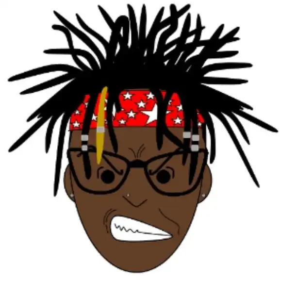

About Cliff Jeans
Cliff Jeans is a musical icon, rapper, and creative visionary who has carved out a unique sound within African music. Blending rap with live experience, culture, and storytelling, he has created an original genre rooted in authenticity and movement.
He began his musical journey at 16, inspired and mentored by the late Zimbabwean multi-award-winning artist Cal-vin Nhliziyo. In 2022, Cliff Jeans’ impact was recognized when he received the Best Hip Hop Artist award..